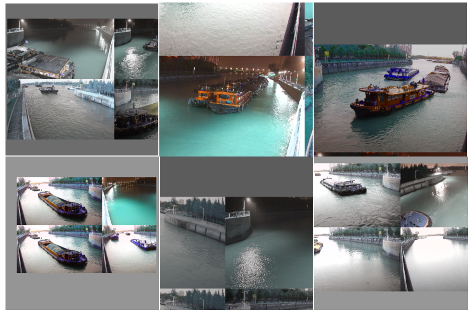
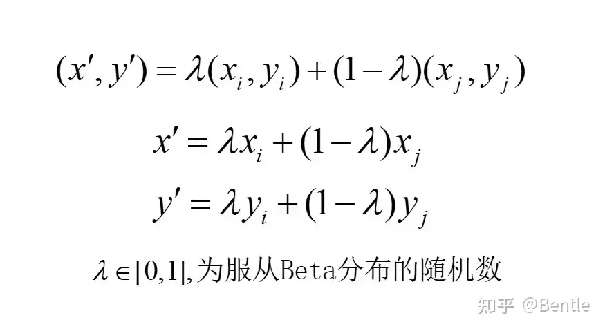
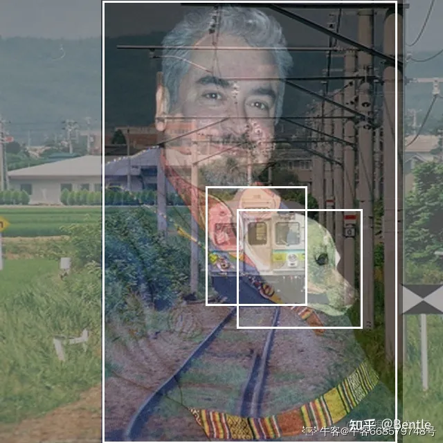
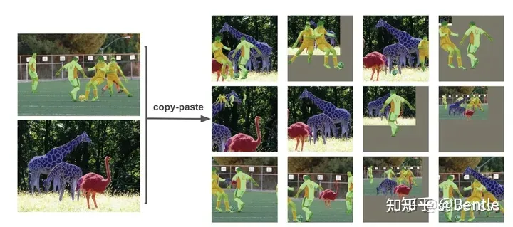

05 数据增强
数据增强
目标检测现在有非常多花里胡哨的数据增强方式，下面我们来看看这些数据增强到底是什么，且有什么作用
1.Mosaic
基本步骤：
- 1.设原图尺寸为(640,480)，则初始化一个(1280,1280)的图片
- 2.在新图片随机选一个点，随机选4张图片以改点为中心拼接起来，超出图片尺寸的地方丢弃

作用：丰富了图片的背景，且变相扩大了BatchSize
2.Letterbox
输入：目标尺寸=[640,480] 、 stride=32
基本步骤：
- 首先将图片按比例缩放，将较长的边缩放到设定的尺寸
- 将较短的边进行填充，最终短边的长度为stride的倍数即可。
简单说：其实就是把长边缩放成目标尺寸，短边按比例缩放然后补黑边补成stride的倍数
最终实际尺寸[640,388]和输入的目标尺寸[640,480]不一定相等
作用：这种方法可以在保留原始图像的纵横比的同时，适应不同尺寸的输入
3.Scale

就是对图片做个尺度变换，这6张图每张都是加了尺度变换的。
作用：由于Mosaic数据增强会使每个图片的实际尺寸变成目标imgsz的1/2，因此对于大尺寸的图片效果不是很好，使用scale来改变其最终的尺寸可以增强训练效果。
4.Mixup
Mixup操作是一种基于线性插值的数据增强技术，旨在扩充训练数据集以提高模型的泛化能力。它通过将两个不同的训练样本进行线性插值，创建新的样本，同时对应的标签也进行线性插值
 5.CopyPaste
copyPaste是数据增强中的一种常用技术，是一种将已有图像的部分复制到其他图像中的技术。这个技术可以用于创建新的训练数据，以便训练更加鲁棒的模型。

不同模型应该采用的数据增强强度不一样，因此对于不同大小模型，有部分超参会进行修改，典型的如大模型会开启 MixUp 和 CopyPaste。
All articles on this blog are licensed under CC BY-NC-SA 4.0 unless otherwise stated.